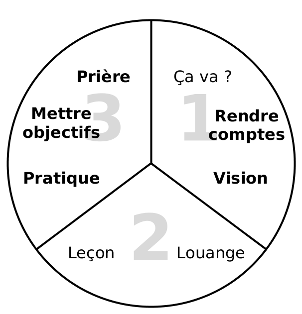

<h1>Le processus trois-tiers</h1>
<div style="margin-right:25px;float:left">
</div>
<p><i>Pour plus de détails aux conditions d’utilisation voyez <a href="/Training_Meeting_Outline/fr">Schéma des parcours de formations</a>.</i>
</p>
<ol><li>Ça va ?</li>
<li><i><b>Rendre des comptes</b></i></li>
<li><i><b>Vision</b></i></li>
<li>Louange</li>
<li>Leçon</li>
<li><i><b>Pratiquer</b></i></li>
<li><i><b>Mettre des objectifs</b></i></li>
<li><i><b>Prière</b></i></li></ol>
<p><br/>
</p><p><br/>
</p>